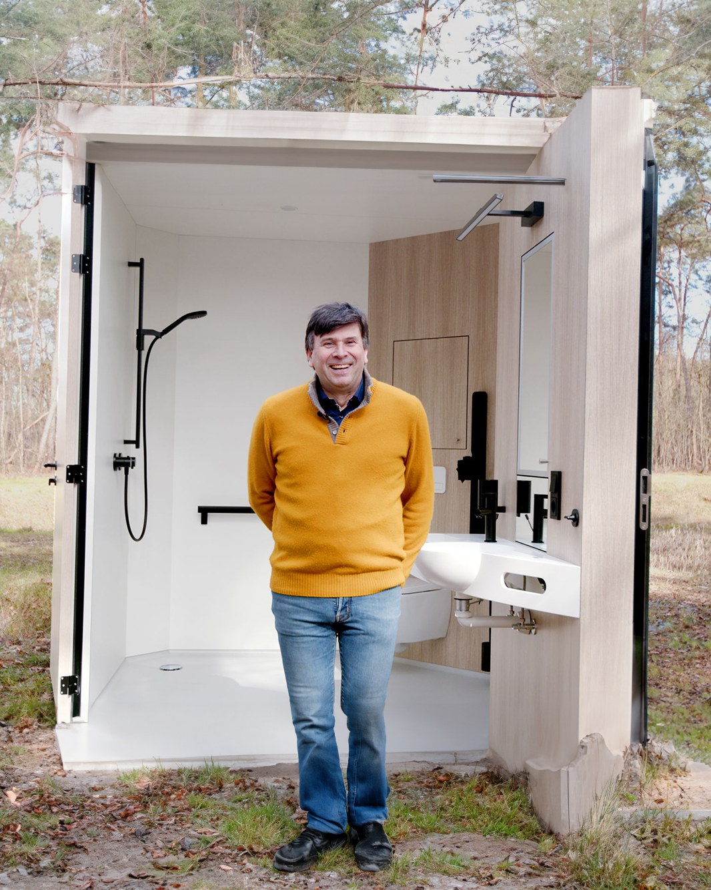

About
Veel nieuws en ook #Sustaconinside bij Alcomel in Tessenderlo.
Het bedrijf is overgenomen en gaat nu op eigen kracht verder
onder aansturing van de nieuwe eigenaar Lieven Van Praet.
In de B&R-periode mochten we voor Alcomel al de CO2-prestatieladder begeleiden.
Vandaag starten we met Thomas Schneider het werk aan het duurzaamheidsrapport.
Clean rooms, operatiekwartieren, prefab badkameroplossingen voor de zorg:
Alcomel zorgt ervoor!
Sustainability report
Thank You for Your Interest in Alcomel's Sustainability Strategy.
This report provides a comprehensive overview of our sustainable
initiatives, strategic pillars, and the steps we are taking to fulfill
our responsibilities
towards the environment, society, and our employees.
In a world where sustainability is becoming increasingly important,
it is crucial to adopt an integrated approach.
At Alcomel, this means that sustainability is deeply embedded in
every aspect of our operations. From product development
to customer relations, from internal processes to external partnerships,
sustainability is at the core of our strategy.